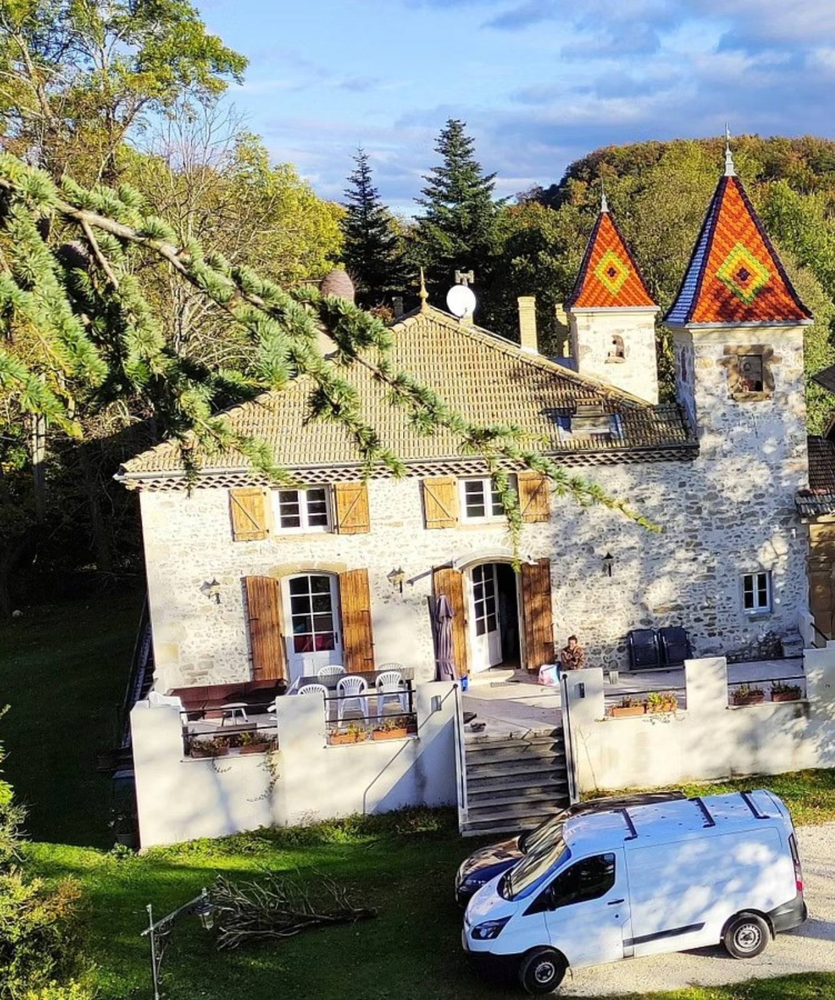
Stage Yoga Iyengar & marche active
Purifier le corps, retrouver son souffle, repartir plein de vitalité. Du jeudi 6 au dimanche 9 mai 2027.
Drôme · Vercors · Printemps 2027 · Le printemps
Le printemps est la saison de prédilection pour purifier le corps des toxines et se régénérer.
La nourriture, la respiration, le mouvement, les pensées, les émotions participent à cet équilibre.
Ces 4 jours seront l’occasion de mettre ces principes en pratique et de repartir plein de vitalité.
Une invitation à la vitalité
Quatre jours d’énergie positive pour soi, en pleine nature, entre la vallée de la Drôme et les contreforts du Vercors. Ce stage marie la pratique rigoureuse du Yoga Iyengar et la marche active en montagne.
Les matinées s’ouvrent en douceur et progressivement, assurant l’ancrage de la structure qui nous tient. La méthode Iyengar est solide : elle appelle la précision du geste, notre attention et notre vivacité.
Les journées se poursuivent sur les sentiers, au rythme du souffle, avec pique-nique face aux paysages.
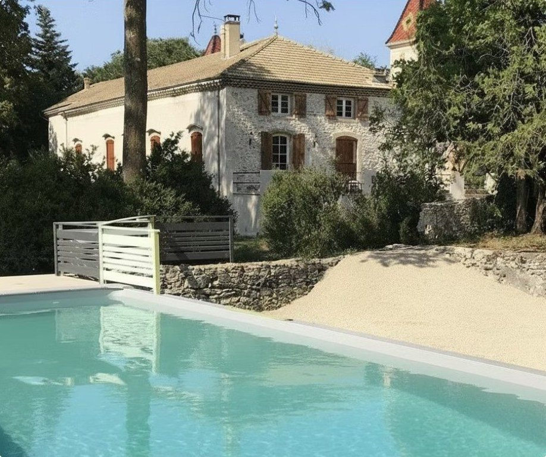
La pratique du Yoga Iyengar
Chaque matin, nous explorerons la méthode créée par BKS Iyengar, reconnue mondialement pour sa rigueur et son intelligence. Cette pratique généreuse, exigeante et précise développe une conscience corporelle profonde.
Nous progresserons à travers plusieurs familles de postures : les debout pour l’ancrage et la vitalité, les arrières pour l’ouverture du cœur, les avant et assises pour l’introspection, les inversées pour une nouvelle perspective.
« Si vous êtes en équilibre dans le présent, vous vivez dans l’éternité. Le Yoga vous enseigne à vivre dans le présent. »
BKS Iyengar
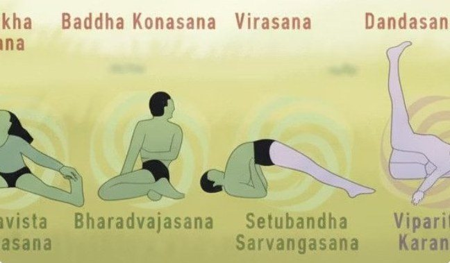
Découverte & perfectionnement
À qui s’adresse ce stage ?
Toute personne est la bienvenue, qui a déjà eu une année de pratique du yoga et/ou une bonne conscience corporelle et qui aime marcher. Aucune performance n’est requise, seulement la curiosité et l’envie de se reconnecter à soi.
Lydia vous accompagnera avec bienveillance et expertise. Le matériel (briques, sangles, couvertures) est fourni.
Hébergement limité à 14 personnes, pour un accompagnement personnalisé et une ambiance conviviale.
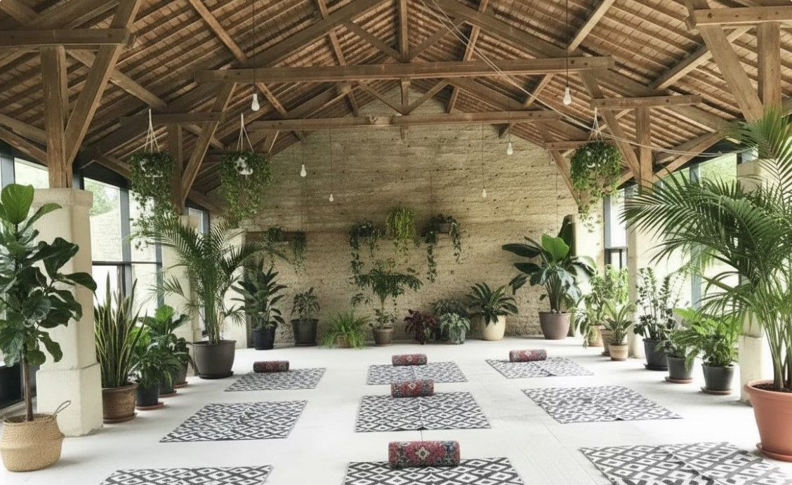
Les bienfaits de la pratique
- RelaxationLa concentration et la détente augmentent ; la conscience intérieure s’affine.
- ForceForce, endurance et alignement du corps, en plus de la souplesse.
- VitalitéJambes puissantes, meilleure circulation, coordination et équilibre.
- SantéBeaucoup d’élèves voient leurs difficultés physiques diminuer.
- MéditationLe mental s’unit au corps et au souffle, jusqu’à un état méditatif.
- SouffleLa marche active prolonge le travail du matin : respiration ample, esprit libre.
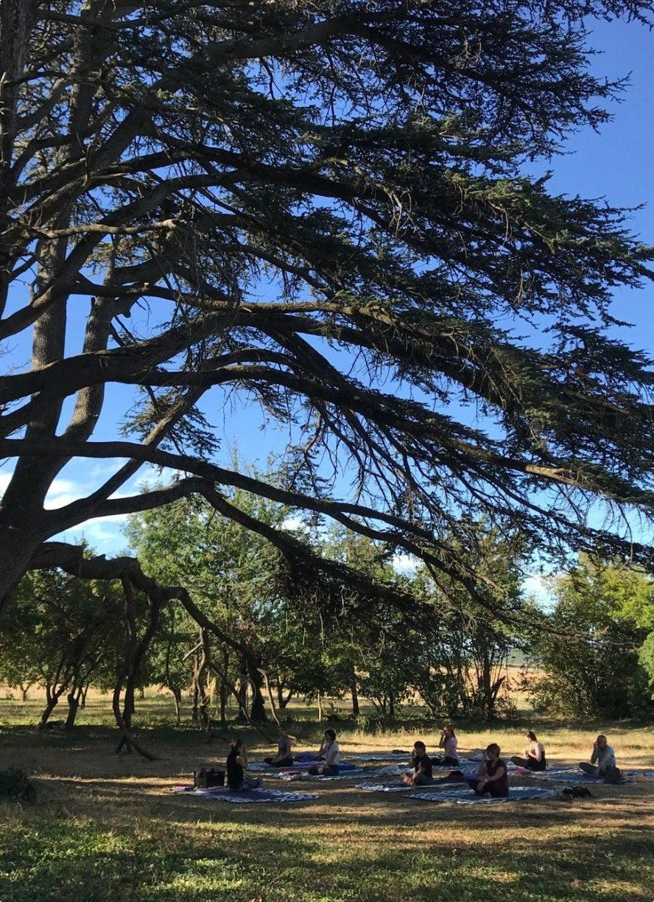
Programme
Rythme des journées
- 1
Mercredi 5 mai
19h à 22h : arrivée et installation au domaine.
Accueil chaleureux et présentation du stage. - 2
Jeudi, vendredi, samedi
7h30 : petit-déjeuner
8h30 à 11h : Yoga Iyengar (avec matériel)
Puis : balade à la journée, 4 à 5 h avec pique-nique (Vercors, Saoû, les Trois Becs)
Au retour : 1 h de relaxation et détente
20h : dîner végétarien - 3
Dimanche 9 mai
Matin : dernière pratique de yoga.
Journée : relâche au domaine.
16h : clôture du stage, le cœur empli de nouvelles énergies.
Marche active
Sur les sentiers de la Drôme et du Vercors
Chaque jour, une balade de 4 à 5 h avec pique-nique, selon la météo. Deux sorties sont accompagnées par Céline et Lydia ; au retour, une heure de relaxation et détente.
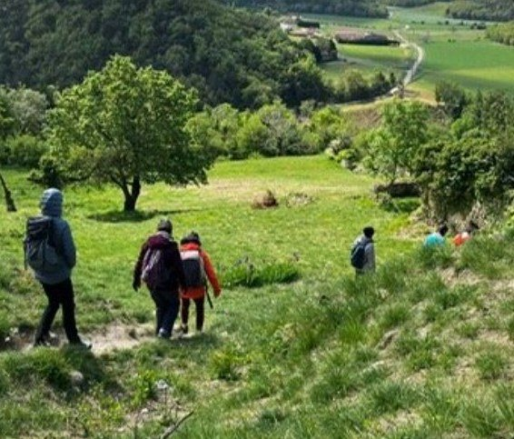
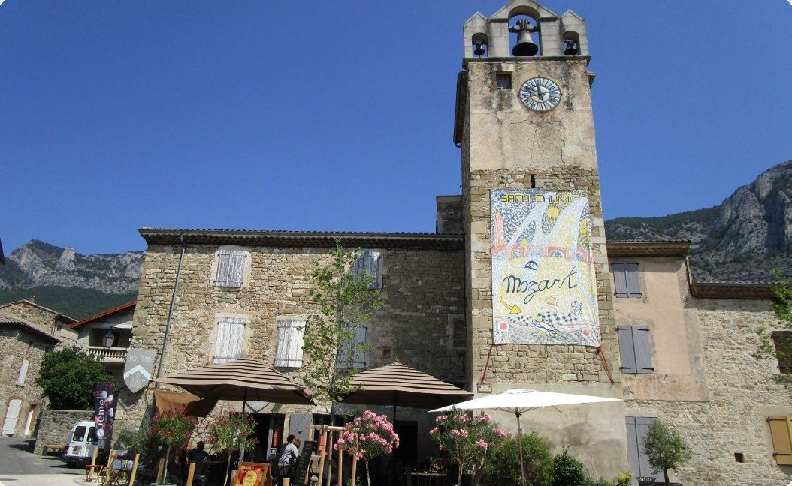
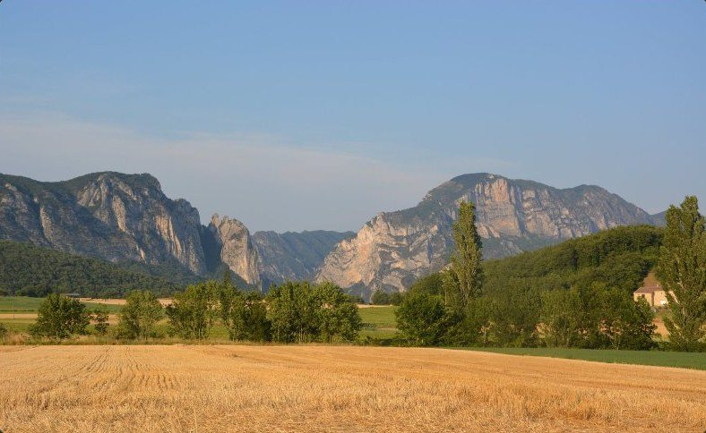
Intervenantes
Vos accompagnatrices
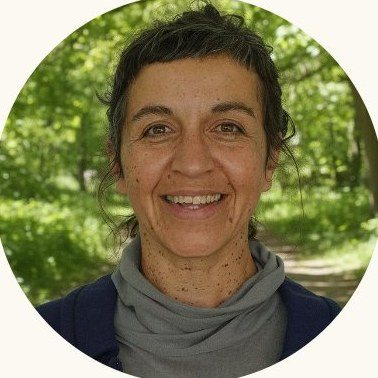
Lydia Boukhirane
Professeure de Yoga Iyengar
Artiste en recherche sur le terrain depuis 30 ans, Lydia allie ses pratiques artistiques à la transmission du Yoga Iyengar. Formée au Centre Victor Hugo à Paris dès 2022, elle obtient en 2025 le certificat d’aptitude à l’enseignement.
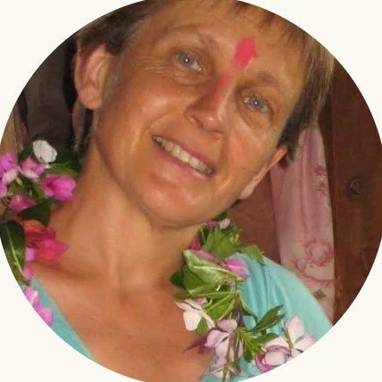
Céline Duverney
Gérante du domaine
Gardienne du Domaine des Chabriers, passionnée d’art et de nature, Céline vous accueille, partage sa connaissance intime du territoire drômois et accompagne les balades avec Lydia.
Le Domaine des Chabriers
Entre la vallée de la Drôme et le Vercors, une bâtisse de caractère et un parc de 3 hectares aux arbres centenaires : un cadre idéal pour se ressourcer.
L’hébergement
Le gîte accueille jusqu’à 14 personnes. La salle de pratique est lumineuse et spacieuse.
La restauration
Tous les repas sont inclus et végétariens, avec des produits locaux, pique-niques compris.
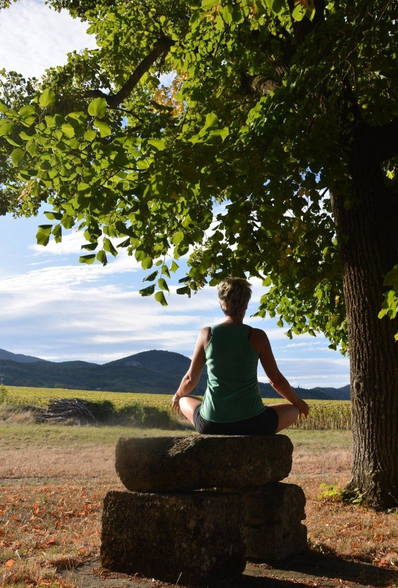
Informations pratiques
Tarif, dates et inscription
Tarif
480 €
Tout compris : enseignement, balades, hébergement en gîte, tous les repas végétariens et pique-niques, matériel de yoga fourni.
Dates
Du jeudi 6 au dimanche 9 mai 2027
Arrivée le mercredi 5 mai, entre 19h et 22h
4 jours et 4 nuits
Lieu et inscription
Domaine des Chabriers
470 route de la Salette
26120 Ourches, Drôme
domainedeschabriers@gmail.com
06 28 23 90 21
Places limitées à 14 participants pour un accompagnement personnalisé. Réservation conseillée.
Ce stage est une invitation à ralentir, à respirer, à marcher. Venez retrouver l’ancrage du corps et la liberté de l’esprit au cœur de la nature. Nous vous attendons avec joie.